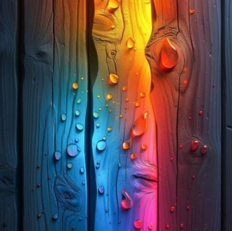
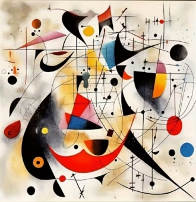
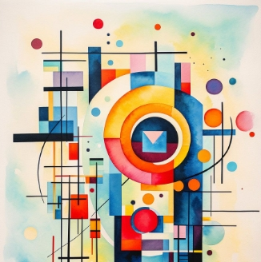
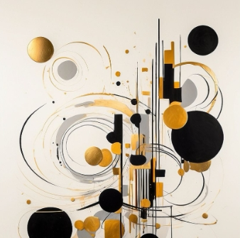
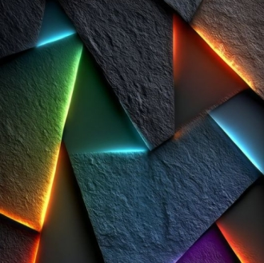
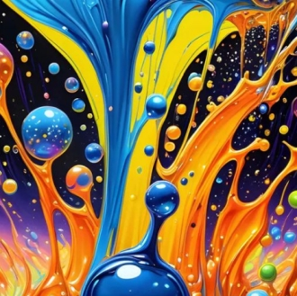
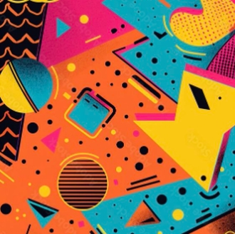
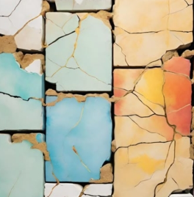
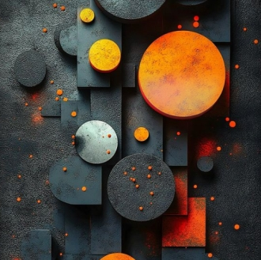

A collection of images that include abstract art, enhanced reality and post- modern tones. Some subdued, some vibrant, some defined and some more vague.
Pure emotion given visual form speaking to the soul, removing restraints from the physical world. Color, light, lines and shapes come together to alert and evoke.








